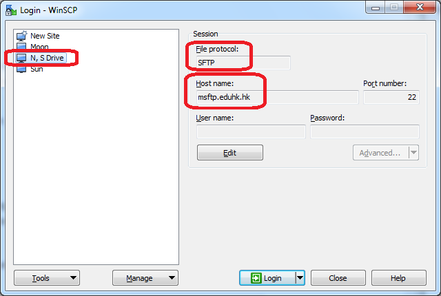

The following are a few LINUX Commands
The following pictures differentiate the commands, "chmod" and "chown"

This is an example of an user inputting a few commands to show the files in the directory.

If you need more help, feel free to watch the video linked below
LINUX Command For BeginnersAfter inputting commands and/or instructions, a VI editor would be very helpful The VI editor makes it easier to navigate the words and/or lines. It would also facilitate navugating the screen!
A few examples are:
If you want to learn more tools available with the VI editor, watch the video linked below
VI TutorialNow, when exchanging information between two computers, it is important to transfer the files and/or information in a secure way. This is possible by using protocols such as SSH, FTP, or FTPS. Though they may seem familiar, there are a few differences. - First, unlike FTP and FTPS, SSH uses "public key encryption" for its security. SSH is used hand-in-hand with a VPN connection. SSH is available for all OS systems. However, SSH is not a default system for file transfers. - Instead, FTP is used for file transfers. This "protocol" is used because it complies with other protocols. Unlike the port for SSH, the port for FTP is 21. - A similar protocol to FTP is SFTP. It is almost like FTP, but more secure as the name "Secure File Transfer Protocol", implies. Another difference is the port, which, for SFTP is 22 instead of 21.
Here are some pictures showing the connection to SSH vs SFTP
